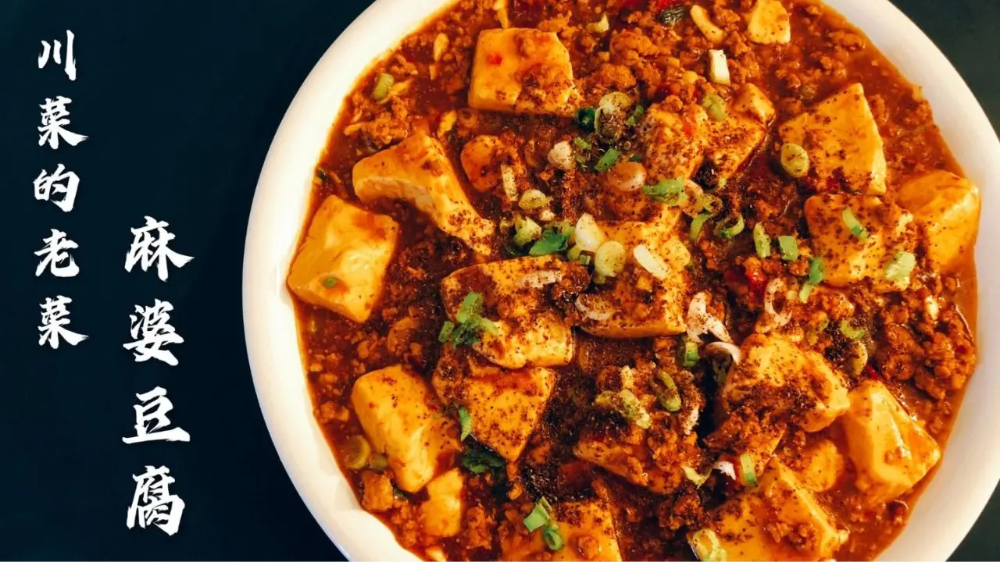

Mapo Tofu

Description
Mapo tofu is one of, if not the most well known Sichuanese food
in China. It has a spicy and numbing flavor, making it a great
dish to serve over rice.
Ingredients
- Ground pork
- Soft tofu
- Sichuan peppercorn
- Bean paste (Dou ban jiang)
- Fermented black bean
- Oil
- Chili flakes
- Scallion
- Ginger
- Garlic
- Cooking wine
- Light soy sauce
- Dark soy sauce
- Starch
Steps
- Put Sichuan peppercorn into pan on low heat. Stir to bring
out the aroma of the peppercorn. 2 to 3 minutes will suffice.
- Once the temperature of the peppercorn has cooled, ground the
peppercorn into powder.
- In a pot of water, add salt. Cut tofu into cubes. Put the
tofu into the pot and bring to a boil. Once boiled, turn
off the heat.
- On a cutting board, chop up about 3 spoonful of Bean paste and
a couple fermented black beans together.
- Mince up some scallion, ginger, and garlic.
- In a hot pan, add in oil. Add in the ground pork and cook
until the color changes. Then add in the bean paste mixture.
Stir to cover and color all the meat. Add in the minced
scallion, ginger, and garlic. Continue to stir.
- Add in chili flakes and stir to cover everything. Add in
cooking wine, light soy sauce, dark soy sauce, and continue
to stir.
- Add in water and bring to boil.
- Once boiled, add in the tofu and some peppercorn powder.
Stir to mix.
- To thicken the broth, create a thickening mixture with
starch and water. Pour in the mixture in three separate
intervals, mixing gently after each. Afterwards, sprinkle
some scallions on top, turn the heat off, and plate it.
- Sprinkle some peppercorn powder and scallion on top of the
dish and serve over rice.